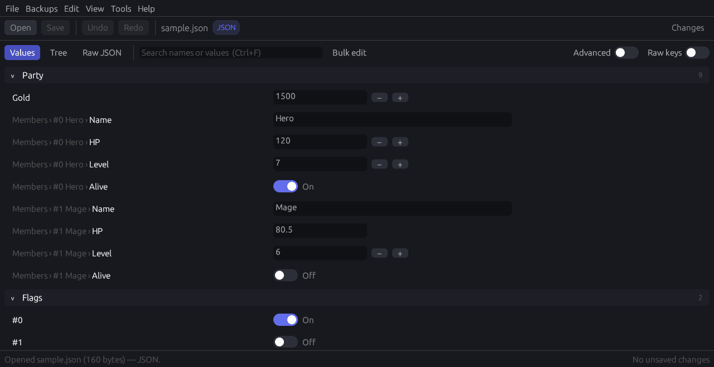

Free offline save editor for 590+ (593) games
Universal Save Editor is a save editor and save manager for PC games. Open a save file, change money, levels, items and stats, and save it back. It runs on your own computer: no uploads, no accounts, no rate limits, and the downloaded app backs up every save before changing it. It's free, and always will be.
Version 0.9.3: Windows (64-bit) · Windows on ARM · Linux (64-bit) · Linux on ARM · macOS
All versions and release notes

Save manager built in
Every time you save, the editor backs up the file first, automatically. Make a named backup before a boss or a big choice, restore any backup with one click, compare two of them, or put a save aside to start a new game and come back to it later. Backups stay next to your saves, on your computer.
How the save manager worksVerify your download: every release has a SHA256SUMS.txt. Compare it with sha256sum UniversalSaveEditor-<version>-linux-x64.tar.gz (Linux), shasum -a 256 UniversalSaveEditor-<version>-macos.zip (macOS) or certutil -hashfile UniversalSaveEditor-<version>-windows-x64.exe SHA256 (Windows). The builds are not code-signed, so Windows may warn about a new file; a matching checksum shows it is the one published here. If Windows shows "Windows protected your PC", the file is new and unsigned, not harmful: click More info, then Run anyway.
Install with Scoop (Windows): scoop install https://raw.githubusercontent.com/Lucasifium/universal-save-editor/main/packaging/scoop/universal-save-editor.json installs it with a Start menu shortcut and checks the download for you; scoop update universal-save-editor gets new releases.

What is a save editor?
A save editor opens the file a game writes when you save and lets you change what is stored in it: money, experience, items, stats, unlocks. Games keep their saves in many formats, often compressed, encrypted or guarded by a checksum, so each one needs its own handling. Universal Save Editor does that for 590+ (593) games in one program and writes the file back the way the game expects it.
How to edit a save file
- Download the editor, or open the browser version.
- In the downloaded app, choose Find my game's saves and pick your game. In the browser, open the save file yourself.
- Change what you want. 523 games open on a screen made for them, with every value named; other saves open as a list of values, or through value search.
- Save. The downloaded app backs up the old file first and reads the new one back to check it before replacing anything; the browser version downloads the edited file, so keep a copy of the original. Then load the save in your game.
Why download a save editor?
- Free, forever. No price, no ads, no account, no paid tier.
- Offline. Your save never leaves your computer: nothing is uploaded, so there are no file size limits, queues or rate limits.
- Optional update alert. Asked once on the first launch (Yes is the default; change it any time in Preferences). When on, the program asks GitHub once at startup whether a newer release exists and shows a banner with a download link; nothing else is sent.
- Safe. Every save is checked by reading it back before it's written, and the old file is backed up first (Backups › Open save manager).
- Works on games it doesn't know. Value search finds a number you know, or one you don't (a health bar, a hidden counter): scan, play, save, then keep what increased, decreased, changed or stayed the same.
- Linux and Steam Deck. Find my game's saves also looks inside Proton and Wine prefixes, where Windows games run through Steam Play keep their saves.
- Xbox app and PC Game Pass. Saves hidden in the Xbox app's container are listed under the names the game gave them and open with the same screens as the Steam saves.
- Unity PlayerPrefs. Coins and unlocks that Unity games keep in the Windows registry (or prefs files on Linux and macOS) open by name and are written back on save.
- Flash and Haxe saves. Flash and AIR
.solfiles and the Haxe saves of OpenFL and HaxeFlixel games (Friday Night Funkin' among them) open with every value by name. - Emulator memory cards. PlayStation and PlayStation 2 memory card images open one save at a time and are written back into the card, with the PS2 card's error-correction codes made again. Single saves exported by cheat devices and PC tools (.mcs, .psu, .max, .cbs, .xps and PS3 .psv) open too and are packed back in their own format.
- Checksum finder. For a save it doesn't know, the editor looks for a CRC, sum or hash near the start or end of the file and writes it again every time you save.
- Find a value, step by step. On a game it doesn't know, a short guide walks you through finding a number and changing it, and the search can refine by itself each time the game saves.
- Your own templates. Name the values you found and press Use for every save, or write a small JSON file saying where each value is; matching saves then open as a list of those values, with the checksum kept right. Names and templates are easy to share.
- Made for phones too. On a phone-size screen the toolbar is one line, and a game screen's sections are tabs that wrap onto extra lines, marked where you made changes.
- Bulk edit and presets. Tick many values and set, add to or multiply them all at once; keep a set of changes as a preset and make it again on another save or slot. A few ready-made presets (such as max gold for RPG Maker MV / MZ) come with the program and only ever raise numbers.
- Console cheat patches. About 2,400 PlayStation 1 to 4, PSP, Vita and Dreamcast games have ready-made cheats from the Apollo patch collection built in: pick the codes and apply them. Encrypted saves from about 80 PS3, PS4, PSP and Vita games open already decrypted, and are encrypted again on save.
- Dreamcast saves. VMU
.vmsfiles and Nexus.dcifiles open with their header CRC and byte order handled, and are written back the same way. - Sega Saturn saves. Single
.bup,.sro,.xml,.b64and.cmssaves, and whole backup RAM images from Mednafen, Beetle, Yabause, Kronos and SAROO, one save at a time. - In your language. Menus and messages in English, German, Spanish, French, Brazilian Portuguese, Japanese and Simplified Chinese, following the system language.
- Several saves in tabs. Open more than one save at a time and copy a value, or a whole group such as an inventory, from one save to another.
- Steam account switch. Finds the Steam IDs inside a save and changes them to another account, for saves copied between accounts or co-op hosts.
- Remembers where your saves are. Folders that held saves are remembered and checked first, so starting the editor doesn't search the whole computer again; Search again looks for newly added games on every fixed drive, including Steam libraries elsewhere and a moved Documents folder.
- Finds your games. The start page lists the games whose saves are on this computer, newest first, one click from the latest save; Find my game's saves shows them first, with a badge for how much of each game can be edited.
- Never writes over a newer save. If the game or a cloud sync saved the file after you opened it, saving stops and asks (reload, or save anyway with the newer file backed up first).
- Japanese, Chinese and Korean names. Shown with your computer's own fonts in the downloaded app.
- Save manager (toolbar button). Automatic and named backups kept in a folder next to each save, where no game loads them. Restore any backup (the current save is backed up first), compare it, or back up and start a new game on a one-save game and restore the old one later. Every backup is flushed to disk and checked before anything is replaced.
- Command line too.
info,list,get,set,decode,encode,backup,restoreandapply(a preset) work from scripts and Steam Deck launch options, with the same checks and backups as the window. - Portable mode. An empty
portablefile next to the program keeps settings, templates and presets in a folder beside it, for a USB stick or a games drive. - Open source. Anyone can read the code (GPL-3.0).
Questions about save editing
Is it safe to edit a save file?
The downloaded app backs up the old file before every save, then reads the new file back and checks it before replacing anything. If the game doesn't like an edit, restore the backup from Backups. In the browser version, keep a copy of the original yourself.
Do I have to upload my save?
No. The editor is a program on your own computer and works offline. The browser version also runs on your computer, inside the page, and never uploads the save.
Which games does it work with?
590+ (593) games are listed below, each with a page saying what can be changed and where its saves are. Saves of games that aren't listed often open too: as named values when the format is a common one, or through value search.
Does it work on Steam Deck, Linux and Mac?
Yes. There are downloads for Windows, Linux and macOS. On Linux and the Steam Deck, Find my game's saves also looks inside the Proton and Wine prefixes where Steam Play keeps Windows games' saves.
Can I use edited saves online?
Edited saves are for single-player play. Don't use them in online or multiplayer modes, where they can break rules or get an account flagged.
Does it cost anything?
No. It's free and always will be: no ads, no account and no limits. The code is open source under the GPL-3.0.
Newest added
- Pillars of EternityGame screen
- The Witcher 2: Assassins of KingsGame screen
- Kingdom Come: DeliveranceValue search
- DOOM EternalValues editor
- Space EngineersGame screen
- Voices of the VoidGame screen
- Yu-Gi-Oh! Legacy of the DuelistGame screen
- Vampire: The Masquerade - BloodlinesGame screen
- UnderrailGame screen
- Rogue LegacyGame screen
Browse by genre
- RPG129 games
- Soulslike and Metroidvania20 games
- Action and adventure143 games
- Shooter36 games
- Roguelike, roguelite and idle39 games
- Survival and crafting34 games
- Simulation, farming and management62 games
- Strategy45 games
Games (593)
523 games open on a screen made for them; the rest can be edited value by value. Type to find yours, or open the full list:
Show all 593 supported games
A (30)
- A Total War Saga: Thrones of BritanniaEvery faction's treasury, yours first, with a button to fill itGame screen
- Aliens: Fireteam EliteAccount level and experience, rank, difficulty, and the level…Game screen
- Alpha ProtocolMoney, level, experience, skill points, skill ranks, ammunition…Game screen
- American Truck SimulatorThe same screen as Euro Truck Simulator 2: money, loan limit…Game screen
- Amnesia: The Dark DescentHealth, sanity, lamp oil and tinderboxes from the plain XML…Game screen
- Anno 1800Your coins and the rest of your company's storage by GUIDGame screen
- Antimatter DimensionsAntimatter, infinity points, eternity points, reality machines…Game screen
- Assassin's Creed BrotherhoodThe player's money and gadget and ammunition counts, with other…Game screen
- Assassin's Creed III RemasteredMoney and gadget and ammunition countsGame screen
- Assassin's Creed IV Black FlagMoney, gadget and ammunition counts, crew, heavy shot, harpoons…Game screen
- Assassin's Creed Liberation HDMoney and gadget and ammunition countsGame screen
- Assassin's Creed OdysseyDrachmae, experience and ability points, materials and gear are…Game screen
- Assassin's Creed OriginsDrachmae, experience and ability points, materials and gear are…Game screen
- Assassin's Creed RevelationsAkçe, smoke bombs, throwing knives, poison and bulletsGame screen
- Assassin's Creed RogueMoney, gadget and ammunition counts, crew, heavy shot, harpoons…Game screen
- Assassin's Creed SyndicateMoney, lockpicks and gadget and ammunition countsGame screen
- Assassin's Creed UnityMoney and gadget and ammunition countsGame screen
- ASTLIBRA RevisionGold, level, experience towards the next level and the six…Game screen
- Atelier Firis: The Alchemist and the Mysterious JourneyColeGame screen
- Atelier Sophie: The Alchemist of the Mysterious BookCole and Tess exchange ticketsGame screen
- ATOM RPGEvery party member's level, experience, seven attributes…Game screen
- Atomic HeartMetal parts, synthetic material, biomaterial, superconductors…Game screen
- Attack on Titan (A.O.T.: Wings of Freedom)Funds and the quantity of every item you own, shown by number…Game screen
- Attack on Titan 2Regiment funds and Wings of Freedom, your player level…Game screen
- Abiotic FactorValues editor
- Ace Combat 8: Wings of TheveValues editor
- Against the StormValues editor
- Assassin's Creed (Ubisoft Connect games)Value search
- AstroneerValue search
- Avatar: Frontiers of PandoraValue search
B (23)
- BalatroMoney, ante, hands and discards, this round, jokers…Game screen
- Baldur's Gate 3Gold and the stack size of every stacked item each companion…Game screen
- Baldur's Gate II: Enhanced EditionParty gold and reputation, each party member's experience, hit…Game screen
- Baldur's Gate: Enhanced Edition / Siege of DragonspearParty gold and reputation, each party member's experience, hit…Game screen
- BarotraumaMoney, levels passed and reputation with each faction, Crew:…Game screen
- Batman: Arkham CityDifficulty, experience, player level and the upgrades bought…Game screen
- BeamNG.driveCareer money and BeamXP from career/playerAttributes.json of a…Game screen
- BioShock InfiniteSilver Eagles, salts, lockpicks and the Health, Shield…Game screen
- BitburnerMoney, BitNode, karma, HP, the skill levels and the experience…Game screen
- Black MesaHealth and armour, spare ammo by type, each carried weapon's…Game screen
- Black Myth: WukongWill, Sparks, level, experience and play time from…Game screen
- BlasphemousTears of Atonement, health and fervour, bile flasks, every…Game screen
- Borderlands (2009) and Borderlands Game of the Year EnhancedLevel, experience, skill points, money, skill levels…Game screen
- Borderlands 2Level, experience, skill points, money, Eridium, Seraph…Game screen
- Borderlands 3Level and experience, skill points, money, Eridium, ammo…Game screen
- Borderlands 4Cash, Eridium, level and experience, specialization, skill…Game screen
- Borderlands: The Pre-SequelLevel, experience, skill points, money and Moonstone, ammo…Game screen
- Bravely Default IIPg, the difficulty, each party member's level, experience, HP…Game screen
- Bug Fables: The Everlasting SaplingBerries, rank, experience, TP, MP, inventory and storage sizes…Game screen
- BioShock Remastered / BioShock 2 RemasteredValue search
- Bloodstained: Ritual of the NightValues editor
- Bounty of OneValues editor
- BrotatoValues editor
C (25)
- CairnWho climbs, play time, falls and deaths, the running buffs…Game screen
- Car Mechanic Simulator 2018Money, level, experience and the garage-shed counts, from…Game screen
- Car Mechanic Simulator 2021Money, level, XP and scrap, the profile's name, play time…Game screen
- Castle FlipperMoney, stone, wood, skill points and the current missionGame screen
- Cat Goes FishingMoney, level, experience, the chosen rod and gearGame screen
- Cave Story+Every save slot's difficulty, health, max health and Whimsical…Game screen
- CelesteStrawberries, deaths, jumps and the other totals, chapters…Game screen
- Chef: A Restaurant Tycoon GameThe budget, ingredient points, restaurant level, rating, seats…Game screen
- ChroniconCharacter level, free skill points and free mastery pointsGame screen
- Civilization VISettings, mods and each civilisationGame screen
- Clair Obscur: Expedition 33Gold, each party member's level, experience, action points…Game screen
- Clicker HeroesGold, rubies, hero souls, ancient souls, primal souls…Game screen
- Cookie ClickerCookies in the bank and baked, counters, ascensions and…Game screen
- Core KeeperSkill experience, ancient coins, maximum health and…Game screen
- Crusader Kings IIThe ruler's wealth, prestige, piety and attributesGame screen
- Cult of the LambThe Lamb's level, XP, hearts and fervour, cult faith, level…Game screen
- CupheadCoins and deaths for both players, Djimmi's wishes, expert mode…Game screen
- Cyberdimension Neptunia: 4 Goddesses OnlineMoney, guild rank, and the totals the game keepsGame screen
- Cyberpunk 2077Eurodollars, from V's own inventoryGame screen
- Civilization VValue search
- CloverPitValues editor
- ControlValue search
- CraftopiaValue search
- Crisis Core: Final Fantasy VII ReunionValues editor
- Crusader Kings IIIValues editor
D (56)
- Dark Souls II: Scholar of the First SinName, class and level, currency, attribute bars, HP / FP…Game screen
- Dark Souls IIIName, class and level, currency, attribute bars, HP / FP…Game screen
- Dark Souls RemasteredName, class and level, currency, attribute bars, HP / FP…Game screen
- Dark Souls: Prepare to Die EditionName, class and level, currency, attribute bars, HP / FP…Game screen
- Darkest DungeonThe estate, how many of each trinket and estate item it holds…Game screen
- Darkest Dungeon IICandles of Hope, Relics, torch and inventory, heroes' HP…Game screen
- Darksiders GenesisSouls, coins, keys, health potions, Strife's and War's powers…Game screen
- DarkwoodLevel, experience, health, stamina and lives, karma, the day…Game screen
- Dave the DiverGold, Bei, chef flames, research and trust points, and every…Game screen
- Dead IslandMoney, level, maximum health and health, from save_N.savGame screen
- Dead Island: RiptideThe same four values from save_N.sav, the layout matched a Dead…Game screen
- Dead RisingFrank's level, PP, maximum health and skills, with buttons to…Game screen
- Dead Rising 2Chuck's level, PP and money, attack, speed, health, item slots…Game screen
- Dead Rising 2: Off the RecordFrank's level, PP and money, attack, speed, health, item slots…Game screen
- Dead Space 2Credits, power nodes, health, stasis and air, and the quantity…Game screen
- Death Must DieGold, runs, wins, current and best streak, time in runs and in…Game screen
- Death Stranding (Director's Cut)The material stocks at every facility you've found, with its…Game screen
- Death Stranding 2: On the BeachThe material stocks at every facility you've found, with its…Game screen
- DeathloopResiduum, stress level and stress XP, the day, location…Game screen
- Deep Rock GalacticCredits, perk points, vanity mastery and forge XP, each dwarf's…Game screen
- Deep Rock Galactic: SurvivorCredits, the minerals and Power Cores, player rank, each…Game screen
- DeltaruneChapter 1 fully, Chapters 2 to 4: dark dollars and the party's…Game screen
- DeltatravelerName, gold, experience, play time, party members and the item…Game screen
- Destroy All Humans! (2020)Crypto's DNA, the currency for weapon, saucer and ability…Game screen
- Deus Ex (2000)Credits, skill points, bioelectric energy, health per body part…Game screen
- Deus Ex: Mankind DividedCredits, Praxis kits, crafting parts and each ammo stack, with…Game screen
- Devil May Cry HD Collection (Devil May Cry 1)Red, yellow and blue orbs and play time of each used slot of…Game screen
- Diablo II (Lord of Destruction 1.10+)Level, experience, gold and stash gold, the four attributes…Game screen
- Diablo II: ResurrectedLevel, experience, gold and stash gold, the four attributes…Game screen
- Disco ElysiumMoney, level, experience, skill points to spend, health…Game screen
- DishonoredCoinsGame screen
- Dishonored 2 / Death of the OutsiderRaw Whalebone with a Max crafting materials button, runes…Game screen
- Divinity: Original Sin 2 Definitive EditionEach player character's experience, vitality, attributes…Game screen
- Divinity: Original Sin Enhanced EditionEach party member's experience, vitality, gold and item stack…Game screen
- Don't StarveHealth, hunger, sanity, temperature, time alive and the day…Game screen
- Door KickersThe squad's experience, each trooper's experience, kills…Game screen
- Dragon Age: Origins (and Awakening)Party money, the Warden's and followers' level, experience…Game screen
- Dragon Ball XenoverseEach custom character's level, experience, attribute points…Game screen
- Dragon Quest Builders 2Level, experience, hit points, attack and defence, Mini medals…Game screen
- Dragon Quest XI S: Echoes of an Elusive AgeEach member's level, HP, MP, attack, defence, agility, deftness…Game screen
- Dragon's Dogma: Dark ArisenGold, Rift Crystals, level, experience, health, stamina…Game screen
- Drakensang: River of TimeEach hero's level, adventure points, life, endurance, astral…Game screen
- Drakensang: The Dark EyeEach hero's level, adventure points, life, endurance, astral…Game screen
- DREDGEFunds, hull tier, sanity and the catch counts, from…Game screen
- Dying LightThe skill tree levelsGame screen
- Dying Light 2 / The BeastMoney, health, the Traversal / Combat / Inhibitor levels…Game screen
- Dynasty Warriors 4 HyperThe difficulty, each officer's playable flag, life, Musou…Game screen
- Dynasty Warriors 7: Xtreme Legends Definitive EditionGold and each officer's health, attack, defense, power, speed…Game screen
- Dynasty Warriors 8: Xtreme Legends Complete EditionGold, gems, facility and weapon materials, Officers: each of…Game screen
- Dead CellsValues editor
- Dead Rising 3Value search
- Dead Rising Deluxe RemasterValues editor
- Deus Ex: Human RevolutionValue search
- DOOM EternalValues editor
- Dragon's Dogma 2Values editor
- Dynasty Warriors 3: Complete Edition RemasteredValues editor
E (14)
- Elden RingName, class and level, currency, attribute bars, HP / FP…Game screen
- ENDER LILIES: Quietus of the KnightsLevel, blight, prayer level and prayers left, Stagnant Blight…Game screen
- Enderal: Forgotten Stories (Special Edition)Character header, game time, every statisticGame screen
- Enter the GungeonEach Gungeoneer's Hegemony credits, runs, deaths, enemies…Game screen
- Epic Battle Fantasy 5Gold, skill points and summon power, and each hero's level…Game screen
- Escape from DuckovMoney, experience and the dayGame screen
- EtherlordsEach player's elemental resources and remaining mana and…Game screen
- Euro Truck Simulator 2Money, loan limit, experience, the five skills and ADR classes…Game screen
- Europa Universalis IIIYour country's treasury, prestige, stability, manpower…Game screen
- Europa Universalis IVTreasury, manpower, prestige, stability, monarch power…Game screen
- EVERSPACEDNA fragments, flashback progression, the pilot's records…Game screen
- Everspace 2Credits, level, experience and device upgrade tokens, every…Game screen
- Eiyuden Chronicle: Hundred HeroesValues editor
- Europa Universalis VValues editor
F (30)
- Fable: The Lost ChaptersThe hero's gold, morality, renown level and ageGame screen
- Fallout (1997)Level, experience, skill points, hit points, radiation, poison…Game screen
- Fallout 2Level, experience, skill points, hit points, radiation, poison…Game screen
- Fallout 3Bottle caps, experience, karma, S.P.E.C.I.A.LGame screen
- Fallout 4Character header, game time, every statisticGame screen
- Fallout ShelterCaps, food, power, water, Stimpaks, RadAway, Lunchboxes, MrGame screen
- Fallout: New VegasBottle caps, experience, karma, S.P.E.C.I.A.LGame screen
- Farming Simulator 15Money, loan, difficulty and the farm's totals from…Game screen
- Farming Simulator 17Money, loan, difficulty and game rules from careerSavegame.xmlGame screen
- Farming Simulator 19The farm's money and loan from farms.xml, and difficulty, game…Game screen
- Farming Simulator 22The farm's money and loan from farms.xml, and difficulty, game…Game screen
- Farming Simulator 25The farm's money and loan from farms.xml, and difficulty, game…Game screen
- Final Fantasy IXEvery saved game in SavedData_ww.dat: gil, and each character's…Game screen
- Final Fantasy Pixel Remaster (I-VI)Gil, total gil, steps, battle and chest counters, every…Game screen
- Final Fantasy ResonanceGil and play time, each character's level, experience, HP, MP…Game screen
- Final Fantasy VII (2013 Steam)Each slot's gil and play time, every character's level…Game screen
- Final Fantasy VII RebirthGil, Moogle Medals, Gold Saucer Points and the inventory: add…Game screen
- Final Fantasy VII Remake IntergradeGil, and adding or removing items, armor, accessories and music…Game screen
- Final Fantasy X / X-2 HD RemasterGil, and every character's and aeon's HP, MP, maxima and stats…Game screen
- Final Fantasy XIIIGilGame screen
- Final Fantasy XVGil, ability points and medals, every character's level, HP…Game screen
- Final Fantasy XVIGil, Ability Points, consumables and materials, and Max…Game screen
- Food Truck SimulatorMoney, prestige and the truck's fuelGame screen
- For The KingEach hero's gold, level, XP, health and focus, and the party's…Game screen
- FTL: Faster Than LightScrap, fuel, missiles, drone parts and hull, the run's…Game screen
- FANTASIAN Neo DimensionValues editor
- Far Cry (Ubisoft Connect games)Value search
- Final Fantasy VIII RemasteredValue search
- Flash and AIR games (.sol saves)Values editor
- ForspokenValues editor
G (17)
- Game Dev TycoonEvery saved company's cash, fans, research points, staff limit…Game screen
- Gas Station SimulatorThe player's and the station's money, fuel income and purchases…Game screen
- Generation ZeroSkill points, experience, level, inventory amounts…Game screen
- Gestalt: Steam & CinderBoth heroes' levels, experience, health, energy and core stats…Game screen
- Ghost of Tsushima Director's CutSupplies, flowers, Ghost Flowers, bamboo, yew wood, wax wood…Game screen
- Gladiator Guild ManagerGold, wood, iron, stone, mana crystals, loan and the dayGame screen
- God of War (2018)Every save in game.sav: XP, hacksilver, every resource…Game screen
- God of War RagnarökXP for Kratos, Atreus and Freya, hacksilver and divine ashes…Game screen
- GothicThe script variables of the save and the dialogue flags, edited…Game screen
- Gothic IIThe script variables of the save and the dialogue flags, edited…Game screen
- Grand Theft Auto IIIMoney, hidden packages, and the statisticsGame screen
- Grand Theft Auto: San AndreasMoney, health and armor, fat, stamina, muscle, respect, sex…Game screen
- Grand Theft Auto: Vice CityMoney, hidden packages, and the statisticsGame screen
- Grandia HD RemasterGold pieces, each character's level, experience, HP, SP…Game screen
- Graveyard KeeperMoney and health, with every other value of the save in…Game screen
- Green HellHealth, energy, hydration, the three nutrients, dirtiness…Game screen
- Grim DawnDifficulty and highest difficulty unlocked, money, level…Game screen
H (20)
- HadesMain currencies, runs, play time and last death, all resources…Game screen
- Hades IIMain currencies, runs, play time and last death, all resources…Game screen
- Half-Life / Opposing Force / Blue ShiftDifficulty, Player: health, armour and flashlight, spare ammo…Game screen
- Half-Life 2 / Episode One / Episode TwoHealth, armour and suit power, spare ammo by type, each carried…Game screen
- Half-Life: AlyxHealth and resin, pistol, shotgun and rapidfire ammo in…Game screen
- Half-Life: SourceHealth, armour, spare ammo by type and each carried weapon's…Game screen
- Hearts of Iron IVPolitical power, stability, war support, command power…Game screen
- Heroes of Might and Magic IIIEvery player's gold and resources, and every hero's level…Game screen
- High on LifePesosGame screen
- Hogwarts LegacyGold, experience, talent points, every resource in the bag…Game screen
- Hollow KnightGeo, masks, notches, abilities and charms, spell levels, nail…Game screen
- Hollow Knight: SilksongRosaries, shell shards, masks, silk, needle, abilities, crests…Game screen
- HoloCure - Save the Fans!HoloCoins and the level of every upgrade, from save_n.datGame screen
- Horizon Chase TurboCampaign tokens and race counts, each stored in three places…Game screen
- Horizon Forbidden WestMetal shards, skill points and every named resource, with level…Game screen
- Horizon Zero DawnMetal shards, skill points and every named resource, with level…Game screen
- Hotline MiamiOverall score, masks, levels and weapons unlocked, the hidden…Game screen
- House FlipperMoney, unused perk points of each skill and the statistics…Game screen
- Hunting Simulator 2Credits, shots fired, animals spotted, tracks inspected…Game screen
- Hyper Light DrifterValues editor
I (5)
- Icewind Dale: Enhanced EditionParty gold and reputation, each party member's experience, hit…Game screen
- InscryptionAct 1 currency and lives, act 2 gold and packs opened, play…Game screen
- Into the BreachWhich squads are unlocked and the totals the game keepsGame screen
- Invisible, Inc.Experience, games played, campaigns and story wins in…Game screen
- Idle SlayerValues editor
J (5)
- Journey to the Savage PlanetThe stash resources with a Max crafting materials button…Game screen
- JudgmentMoney and HPGame screen
- Jurassic World EvolutionCareer, island and play time are shownGame screen
- Just Cause 2Money, chaos points, and the weapon, armor and vehicle parts…Game screen
- Jurassic World Evolution 2Values editor
K (15)
- KenshiEvery member's attributes and skills, the health of each body…Game screen
- Kerbal Space ProgramFunds, science, reputation, the level of each Space Center…Game screen
- King Arthur: Knight's TaleGold, relic dust, soul, spire shards and every hero's level…Game screen
- Kingdom Hearts Final Mix (1.5+2.5 ReMIX, PC)Munny, difficulty, magic levels, the ten party members' level…Game screen
- Kingdom Hearts II Final Mix (1.5+2.5 ReMIX, PC)Munny, difficulty, magic levels, each party member's level…Game screen
- Kingdom Hearts IIIMunny, level, EXP, the bonus stats, Sora, Donald and Goofy's HP…Game screen
- Kingdom RushGems, the difficulty, the upgrade ranks and each hero's…Game screen
- Kingdom Rush 5: Alliance TDGems, the difficulty, the upgrade ranks, the consumables…Game screen
- Kingdom Rush FrontiersGems, the difficulty, the upgrade ranks and each hero's…Game screen
- Kingdom Rush OriginsGems, the difficulty, the upgrade ranks and each hero's…Game screen
- Kingdom Rush VengeanceGems and the stars on each campaign level, from…Game screen
- Kingdom Come: DeliveranceValue search
- Kingdom Two CrownsValue search
- Koei Tecmo games (Nioh, Wo Long, Stranger of Paradise)Values editor
- Kunitsu-Gami: Path of the GoddessValues editor
L (37)
- Last EpochLevel, experience, deaths, respecs, class id and the hardcore…Game screen
- Legend of GrimrockEach member's health and energy, strength, dexterity, vitality…Game screen
- Legends of Kingdom RushEach hero's experience and unlocked flag, and the gems, stars…Game screen
- LEGO Batman 2: DC Super HeroesThe stud walletGame screen
- LEGO Batman 3: Beyond GothamThe stud walletGame screen
- LEGO Batman: Legacy of the Dark KnightThe studs wallet and play time, the save encryption is handled…Game screen
- LEGO Batman: The VideogameThe stud counterGame screen
- LEGO City UndercoverThe stud walletGame screen
- LEGO DC Super-VillainsThe stud walletGame screen
- LEGO Harry Potter: Years 1-4The stud walletGame screen
- LEGO Harry Potter: Years 5-7The stud walletGame screen
- LEGO Indiana Jones 2: The Adventure ContinuesThe stud counterGame screen
- LEGO Indiana Jones: The Original AdventuresThe stud counterGame screen
- LEGO Jurassic WorldThe stud walletGame screen
- LEGO Marvel Super HeroesThe stud walletGame screen
- LEGO Marvel Super Heroes 2The stud walletGame screen
- LEGO Pirates of the CaribbeanThe stud walletGame screen
- LEGO Star Wars II: The Original TrilogyThe stud counterGame screen
- LEGO Star Wars III: The Clone WarsThe stud walletGame screen
- LEGO Star Wars: The Complete SagaThe stud counterGame screen
- LEGO Star Wars: The Force AwakensThe stud walletGame screen
- LEGO Star Wars: The Skywalker SagaThe stud wallet, from COLLECTABLES.BLOB in a SLOTn folderGame screen
- LEGO Star Wars: The Video GameThe stud counterGame screen
- LEGO The HobbitThe stud walletGame screen
- LEGO The IncrediblesThe stud walletGame screen
- LEGO The Lord of the RingsThe stud walletGame screen
- Lethal CompanyCredits, the profit quota and what is paid towards it, quotas…Game screen
- Lies of PErgo, level, humanity, the six stats and every item's count…Game screen
- Like a Dragon Gaiden: The Man Who Erased His NameMoneyGame screen
- Like a Dragon: Ishin!Food, seafood and crafting materials, virtue, tokens…Game screen
- Luck be a LandlordCoins, removal and reroll tokens, spins, the floor, the rent…Game screen
- LEGO Harry Potter CollectionValues editor
- LEGO Marvel's AvengersValues editor
- LEGO WorldsValues editor
- Like a Dragon: Infinite WealthValues editor
- Like a Dragon: Pirate Yakuza in HawaiiValues editor
- Lost JudgmentValues editor
M (36)
- Mad MaxScrap, from GameSave01.sav to GameSave10.savGame screen
- MagicraftMagic crystals, ancient blood, chaos cores, the permanent…Game screen
- ManeaterShark level, play time and story progress, from _<Steam…Game screen
- Mass Effect (2008)Level, experience, talent points and power ranks, credits…Game screen
- Mass Effect 2Level, experience, talent points, difficulty, credits, medi-gel…Game screen
- Mass Effect 3Level, experience, talent points, difficulty, credits, medi-gel…Game screen
- Mass Effect Legendary Edition (ME1)Level, experience, talent points and power ranks, credits…Game screen
- Mass Effect Legendary Edition (ME2)Level, experience, talent points, difficulty, credits, medi-gel…Game screen
- Mass Effect Legendary Edition (ME3)Level, experience, talent points, difficulty, credits, medi-gel…Game screen
- Mass Effect: AndromedaCredits, Ryder's level and skill points, each squad member's…Game screen
- Master of Orion IIEach empire's treasury, research points and ship range…Game screen
- Medieval DynastyHealth, stamina, food and water, reputation, tax, the four…Game screen
- Metal Gear Solid V: The Phantom PainGMP, heroism and demon points, every Mother Base staff member…Game screen
- Metro 2033 ReduxMilitary-grade rounds, every ammo type and crafting metal…Game screen
- Metro ExodusMilitary-grade rounds, every ammo type and crafting metal…Game screen
- Metro: Last Light ReduxMilitary-grade rounds, every ammo type and crafting metal…Game screen
- MewgenicsHouse gold and food, adventure coins and food, the current day…Game screen
- Middle-earth: Shadow of WarKill and progress counters by their game names, checked against…Game screen
- Minecraft (Java Edition)Health, food, XP, game mode, world settings, inventory…Game screen
- Minecraft DungeonsExperience, total gear power and the emerald, gold and Eye of…Game screen
- Mon BazouCash, the player's meters and the hard mode and permadeath…Game screen
- Monster Train 2The Covenant level you play at, the highest Covenant unlocked…Game screen
- MoonlighterGold, days passed and the banker's invested money, the backpack…Game screen
- Mortal ShellTar, the shell points of each shell, max health, deaths, New…Game screen
- Mortal Shell IIGold, Gloom and Glimpses, their lifetime totals, every item's…Game screen
- Mutant Year Zero: Road to EdenScrap, weapon parts and medpacks, the Ark's artifact points…Game screen
- My Hero One's JusticeCash, from the plain Unreal save systemdata.savGame screen
- My Hero One's Justice 2Hero coins, from the plain Unreal save systemdata.savGame screen
- My Summer CarMoney and the needs, every other single value of…Game screen
- Marvel's Spider-Man 2Value search
- Marvel's Spider-Man RemasteredValue search
- Marvel's Spider-Man: Miles MoralesValue search
- MegabonkValues editor
- Monster Hunter RiseValues editor
- Monster Hunter Stories 3: Twisted ReflectionValues editor
- Monster Hunter WildsValues editor
N (7)
- Necromunda: Hired GunCredits, level, experience and each faction's reputation…Game screen
- Need for Speed: Most Wanted (2005)Money and pursuit bounty of a profile file, with the file's MD5…Game screen
- Neverwinter Nights: Enhanced EditionGold, experience, ability scores, hit points, alignment, skills…Game screen
- NieR Replicant ver.1.22474487139...Health, level, experience, money, recovery items and materials…Game screen
- NieR:AutomataMoney, experience, item and material counts, weapon levels…Game screen
- No Man's SkyUnits, nanites and quicksilverGame screen
- NoitaGold, gold spent, health and maximum health from player.xml…Game screen
O (15)
- Octopath TravelerMoney and the eight travellers' level, EXP, JP and current HP/SPGame screen
- Octopath Traveler IIMoney and the eight travellers' level, EXP, JP and current HP/SPGame screen
- OMORIClams, each friend's level, heart and juice in Headspace…Game screen
- One Piece: Pirate Warriors 3Each of the 47 character slots' health, attack, defence…Game screen
- One Piece: Pirate Warriors 4Beli, and the quantity of every coin you ownGame screen
- Onimusha: Way of the SwordEach save slot, red souls, health and Oni energy, items by name…Game screen
- ONINAKIThe Watcher's level, health, experience, souls and healing…Game screen
- OpenTTDEach company's money, loan and maximum loan, the zlib, xz or…Game screen
- OpenXcom (X-COM: UFO Defense)Funds, months and days passed, difficulty, scientists…Game screen
- Ori and the Blind ForestLevel, experience, ability points, life and energy cells…Game screen
- Outer WildsLoop counters, marshmallows eaten, the launch codes and the Eye…Game screen
- OutwardSilver, health, stamina, mana, food, drink, sleep and the burnt…Game screen
- Oxygen Not IncludedEvery duplicant's attribute levels and experience, total…Game screen
- Okami HDValue search
- OpenFL and HaxeFlixel games (Haxe saves)Values editor
P (27)
- PalworldTechnology points, ancient technology points, Lifmunk effigies…Game screen
- Pathfinder: KingmakerMoney, the player and each companion's ability scores…Game screen
- Pathfinder: Wrath of the RighteousMoney, the player and each companion's ability scores…Game screen
- PathwayCash, fuel, ammunition, supplies and the day of the expeditionGame screen
- PAYDAY 2Spending cash, offshore account, level, infamy rank and points…Game screen
- PC Building SimulatorCash, kudos and hard mode, from the career .binary saveGame screen
- Persona 3 PortableYen, level, experience and the three social stats, every…Game screen
- Persona 3 ReloadYen, every party member's level, experience, HP and SP…Game screen
- Persona 4 GoldenYen, level, experience and the five social statsGame screen
- Persona 5 RoyalMoney, HP / SP, levels, experience and Persona stats for…Game screen
- Persona 5 StrikersMoney, Persona points, unspent BOND points, and the stacks you…Game screen
- PhasmophobiaMoney, level, prestige and experience, how many of each item…Game screen
- Phoenix Wright: Ace Attorney TrilogyHow many episodes of each of the three games are unlocked on…Game screen
- Pillars of EternityMoney, camping supplies, the difficulty, each party member's…Game screen
- Pizza TowerCompletion %, enemies killed and play time, every level's score…Game screen
- Planescape: Torment: Enhanced EditionCoppers, the Nameless One and each companion: experience, level…Game screen
- PlanetbaseCoins, extra prestige, landing permissions, and the health…Game screen
- Plants vs. Zombies (Game of the Year Edition)Money, Adventure level and completions, Crazy Dave's shop…Game screen
- Pokémon (Gen 1-9)Every mainline game, Red and Blue to Scarlet and Violet: trainer, money, badges, bag, party and PC boxesGame screen
- Pokémon Infinite FusionMoney, coins, Battle Points, badges and the difficulty, every…Game screen
- Police Simulator: Patrol OfficersPlay time, shifts, encounters and each district's experience…Game screen
- Potion Craft: Alchemist SimulatorGold, popularity, karma, experience and the inventory with Max…Game screen
- PragmataThe difficulty rank points, New Game+ count and game time…Game screen
- Prison ArchitectThe bank balance, play time and the main prison settings in…Game screen
- Project WarlockScore, lives, level, health, mana, the four stats, points to…Game screen
- Project ZomboidEvery character's hours survived, kills, weight and death flag…Game screen
- Prey (2017)Value search
R (23)
- R.E.P.O.Level, money, lives, the charging station and total haul, each…Game screen
- RaftThe day, time played, time of day, weather and radio tower flag…Game screen
- Ready or NotThe best rating, best time and times completed of every mission…Game screen
- Red Dead RedemptionMoney, honor, fame, the Dead Eye meter and consumables, weapons…Game screen
- Red Dead Redemption 2Cash, honor, the health, stamina and Dead Eye cores and XP…Game screen
- Ren'Py visual novelsThe game's numbers, flags and text variables with a filter…Game screen
- Resident Evil 5Money and exchange pointsGame screen
- Resident Evil RequiemHealth of the player and other characters, inventory counts…Game screen
- RimWorldEvery colonist's skills and every silver stack, plus steel…Game screen
- Risk of Rain 2Lunar coins, coins collected, runs played and play time of a…Game screen
- Road 96Money, energy and karma, from the plain JSON context.savGame screen
- Road RedemptionThe permanent upgrade ranks, kills, wins and the XP carried…Game screen
- RoboquestWrenches, the selected difficulty and class, the saved run's…Game screen
- Rogue LegacyGold, health, mana, class, traits, spells, special item, bonus…Game screen
- RollerCoaster TycoonCash, bank loan, maximum loan and the entrance fee from a saved…Game screen
- RollerCoaster Tycoon 2Cash, bank loan, maximum loan and the entrance fee from a saved…Game screen
- RPG Maker MV / MZ gamesGold, steps and play time, each character's name, level, EXP…Game screen
- RPG Maker XP gamesGold, steps, the party and every actor, and the items, weapons…Game screen
- Rune Factory 4 SpecialMoney, HP and RP, strength, intelligence and vitality, order…Game screen
- Remnant 2Value search
- Resident Evil 4 (2023)Values editor
- Risk of Rain ReturnsValues editor
- Rogue Legacy 2Values editor
S (45)
- Saints Row IVCash, data clusters, respect level and respect, the save's…Game screen
- Saints Row: The Third (and Remastered)Cash and the crib stash, respect level and respect, stunt jumps…Game screen
- Salt and SanctuaryLevel, salt, gold, kills, deaths, sanctuary rests, corruption…Game screen
- Samurai Warriors 2Money and the stored stats of each unlocked officer of…Game screen
- Samurai Warriors 4-IIGold, the five strategy tomes and every officer's Health…Game screen
- Samurai Warriors 5Gold, the Dojo's stock EXP, shared skill points and stock…Game screen
- Satellite ReignYour funds and the researcher, scientist, doctor and kill…Game screen
- Schedule IMoney, Rank, Time and GameGame screen
- Sea of StarsThe party's level, total experience, gold and deaths, from…Game screen
- Sekiro: Shadows Die TwiceSen, Attack Power, carried Spirit Emblems, skill points to…Game screen
- Shadow Warrior 2Level, experience, money, crystal points, perk points, health…Game screen
- Shape of DreamsStardust, spent stardust, completed reveries, preferred…Game screen
- Single Player Tarkov (SPT)Level, experience, skills, trader standing and loyalty, health…Game screen
- Skyrim (Special / Anniversary Edition)Character header, game time, every statisticGame screen
- Slay the SpireGold, HP, potion slots, the deck, relics and potions, ascension…Game screen
- Slay the Spire 2Each character's highest and preferred Ascension, wins, losses…Game screen
- Sleeping Dogs: Definitive EditionMoney and face, cop and triad XPGame screen
- Slime RancherNewbucks, health, energy, radiation and slime keysGame screen
- SnowRunnerMoney, rank, experience, the statistics, the difficulty factors…Game screen
- Sonic Adventure 2The level and the points of the seven stats of every ChaoGame screen
- Sonic ManiaAll eight Mania Mode and three Encore Mode slotsGame screen
- Sons of the ForestThe day and timeGame screen
- Space EngineersThe world's rules from Sandbox.sbc and a table of the credits…Game screen
- Space HavenCredits, the day and time, the difficulty options, and a table…Game screen
- Star Wars Jedi: Fallen OrderUnspent and total skill points, XP toward the next point, stims…Game screen
- Star Wars Jedi: SurvivorUnspent and total skill points, XP toward the next point, stims…Game screen
- Star Wars: Knights of the Old RepublicThe player and party members and how many of each item…Game screen
- Star Wars: Knights of the Old Republic II – The Sith LordsThe player and party members and how many of each item…Game screen
- StarboundPixels and the other currencies, item counts in every bag, with…Game screen
- Stardew ValleyGold, Qi Gems, casino coins, Golden Walnuts, health and energy…Game screen
- Stellar BladeHealth, shield, stamina, the Beta, Burst and Tachy gauges…Game screen
- StellarisEnergy, minerals, food, alloys, consumer goods, influence…Game screen
- StoneshardGame screen
- Stranded DeepHealth, food, water, sleep, the five skills and the day countGame screen
- Streets of RogueNuggets, wins, deaths and games played, and every agent, item…Game screen
- SubnauticaGame mode, play time, vehiclesGame screen
- Subnautica 2Health, oxygen, food and water with their maximums, the player…Game screen
- Subnautica: Below ZeroGame mode, play time, vehiclesGame screen
- Supermarket SimulatorMoney, store level and points, the store upgrade and storage…Game screen
- SupralandCoins, the coin limit, sword damage and range, progress points…Game screen
- Sword Art Online: Fatal BulletThe quantity of every weapon, costume, accessory, bullet…Game screen
- SatisfactoryValue search
- Sid Meier's Civilization VIIValue search
- Street Fighter 6Values editor
- Suikoden I & II HD RemasterValues editor
T (49)
- Tales of SymphoniaGald, grade points, the records, all nine characters and every…Game screen
- Tales of Vesperia: Definitive EditionGald, play time, Characters: level, experience, HP, TP, attack…Game screen
- Tavern MasterMoney, quest points, the tavern's name, and every employee's…Game screen
- TeardownCash, the hub score, every tool's ammunition and its range…Game screen
- Terra InvictaEvery faction's money, influence, operations, research, boost…Game screen
- Terraria (characters)Life and mana, permanent upgrades, inventory, coins and ammo…Game screen
- Terraria (worlds)A map editor: pan and zoom the whole world, see what every tile…Game screen
- The Banner Saga 3Renown, supplies, morale and counts, and a table of each hero's…Game screen
- The Binding of Isaac: RebirthEden tokens, win and loss streaks, deaths, donation machine…Game screen
- The Elder Scrolls II: Daggerfall (Daggerfall Unity)Gold carried, level, health, magicka and fatigue, the eight…Game screen
- The Elder Scrolls III: MorrowindLevel, gold, the eight attributes, all 27 skills, health…Game screen
- The Elder Scrolls IV: OblivionLevel, gold, the eight attributes, all 21 skills and base healthGame screen
- The Evil WithinGreen gel, trap parts, weapon upgrade levels and stat upgrades…Game screen
- The ForestEvery item the player carries with its amount and the limit…Game screen
- The Legend of Heroes: Trails in the Sky the 3rdMira, the seven kinds of sepith, each character's level and how…Game screen
- The Legend of Heroes: Trails of Cold SteelMira, the eight kinds of sepith, each party member's level…Game screen
- The Legend of Zelda: Breath of the WildRupees, monster parts, max hearts and stamina, Korok seeds…Game screen
- The Long DriveHealth, food, water and sleep, the distance driven and…Game screen
- The MessengerEach save slot's play time, deaths and New Game Plus count…Game screen
- The Planet CrafterTerra tokens, the six terraformation levels of each planet…Game screen
- The Sims (2000) / The Sims Legacy CollectionFunds and family friends, and for every Sim in the family…Game screen
- The Sims 2 / The Sims 2 Legacy CollectionEach family's funds and every Sim's skills, personality, job…Game screen
- The Sims 3Funds, and for every Sim their lifetime reward points, lifetime…Game screen
- The Sims 4Funds and its Sims with their names, ages and gendersGame screen
- The Witcher 2: Assassins of KingsExperience, unspent talent points and Orens, from…Game screen
- The Witcher 3Crowns, level, unspent skill points and experience, a Story…Game screen
- theHunter: Call of the WildCash, level, XP and the skill and perk points of the profile…Game screen
- Thief SimulatorCash, level, experience, skill points, hard mode and New Game…Game screen
- ThymesiaExperience, healing potions, play time and a table of…Game screen
- Tiny Tina's WonderlandsLevel and experience, skill points, gold, moon orbs and ammo…Game screen
- Titan Quest Anniversary EditionLevel, experience, money, unspent points, the five attributes…Game screen
- Tokyo Xtreme Racer (2025)CP and its limit, PP, garage size, the day, and the battle…Game screen
- Tooth and TailWhich campaign missions are marked completeGame screen
- Torchlight IIDifficulty, level, experience, fame, gold, unspent points…Game screen
- Torchlight IIILevel, hit points, experience, skill points and difficulty…Game screen
- Total War Saga: TroyEvery faction's treasury, yours first, with a button to fill itGame screen
- Total War: AttilaEvery faction's treasury, yours first, with a button to fill itGame screen
- Total War: ROME IIEvery faction's treasury, the player's first, with a button to…Game screen
- Total War: SHOGUN 2Every faction's treasury, the player's first, with a button to…Game screen
- Total War: THREE KINGDOMSEvery faction's treasury, the player's first, with a button to…Game screen
- Total War: WarhammerEvery faction's treasury, yours first, with a button to fill itGame screen
- Total War: Warhammer IIEvery faction's treasury, yours first, with a button to fill itGame screen
- Touhou Luna NightsGold, level, experience, HP, MP, knife and clock upgrades…Game screen
- Trails in the Sky 1st ChapterMira, the eight sepith with a Max crafting materials button…Game screen
- Trails to Azure / Ao no Kiseki KAIMira, DP, medals, difficulty, play time, the seven Sepith…Game screen
- Travellers RestMoney, the crafting room, tavern floor and cellar upgrades…Game screen
- TyrannyMoney, camping supplies, and each character's experience…Game screen
- The Long DarkValues editor
- Touhou Mystia's IzakayaValues editor
U (5)
- ULTRAKILLPoints and every weapon variant and arm, owned or not, in…Game screen
- UnderrailExperience, level and the unspent attribute, skill, feat…Game screen
- UndertaleName, LV, HP, attack, defence, EXP, gold, kills, the item…Game screen
- Undertale YellowLV, EXP, gold, HP and the other stats, equipment names…Game screen
- Unity games (PlayerPrefs)Values editor
V (6)
- Valheim (characters)Health, stamina, skills, item stacks, quality and durability…Game screen
- Vampire SurvivorsCoins, power-up ranks and what's unlockedGame screen
- Vampire: The Masquerade - BloodlinesMoney, experience to spend, humanity, and every attribute…Game screen
- Vikings: Wolves of MidgardGold, iron, steel, blood, jotunjarn, the ores and bloodstone…Game screen
- Voices of the VoidPoints, food, sleep, suit battery, the moon phase and the level…Game screen
- Victoria 3Values editor
W (19)
- Wandering SwordMoney, with the map, mount, play time and difficulty shown…Game screen
- Warhammer 40,000: MechanicusBlackstone, the Ark's bonus points and slots, and each…Game screen
- Warhammer 40,000: Rogue TraderScrap, Profit Factor, the Navigator's insight, difficulty…Game screen
- Warm SnowMemento souls, red souls, souls, soul jars, the life, kill…Game screen
- Warriors All-StarsThe gold and the materials you own in each of the nine campaign…Game screen
- Warriors OrochiThe shared Growth Points and each officer's Life, Musou, Attack…Game screen
- Warriors Orochi 3 Ultimate Definitive EditionGrowth Points, Gems, each officer's health, Musou, attack…Game screen
- Warriors Orochi 4Gems, Crystals, Growth Points, Skill Orbs, the weapon-element…Game screen
- Wasteland 2Each ranger's level, experience, health, attribute, skill…Game screen
- Wasteland 3Money, each ranger's level, XP, hit points, attributes, unspent…Game screen
- Watch Dogs 2Money, followers and research points, and the lifetime totals…Game screen
- West of LoathingMeat, level, experience, the class and resistances, and…Game screen
- Wizard of LegendChaos gems, play time and the unlocked outfits, from GameData.gdGame screen
- Wolcen: Lords of MayhemGold, level, experience, primordial affinity, the four…Game screen
- Workshop SimulatorThe account balance, total money earned and orders finished…Game screen
- World of HorrorUnlock every achievement, mystery ending, enemy, event…Game screen
- World War Z (and Aftermath)Currency, coins, account level and the class perk levels, from…Game screen
- WorldBox - God SimulatorEvery unit's level, experience, health, hunger and ruler stats…Game screen
- WreckfestCredits, experience and tournament fame from career.cresGame screen
X (9)
- X RebirthYour credits and name, large saves take a few seconds to openGame screen
- X-COM: Terror from the Deep (original saves)The money from LIGLOB.DAT in a save slot folder of the original…Game screen
- X-COM: UFO Defense (original saves)The money from LIGLOB.DAT in a save slot folder of the original…Game screen
- X4: FoundationsThe player's credits, written to all three places the save…Game screen
- XCOM 2Supplies, intel, alloys, elerium and the other HQ resources…Game screen
- XCOM 2: War of the ChosenHQ resources and soldiersGame screen
- XCOM: Enemy Unknown / Enemy WithinMoney, every soldier's rank, XP, kills, HP, aim, mobility…Game screen
- Xbox app / PC Game Pass saves (any game)Values editor
- XCOM: Chimera SquadValue search
Y (13)
- Yakuza 0Both characters' money and CP, the uncollected real estate…Game screen
- Yakuza 3 RemasteredMoney, the hostess club's money and his experienceGame screen
- Yakuza 4 RemasteredAkiyama, Saejima, Tanimura & Kiryu: each one's money…Game screen
- Yakuza 5 RemasteredKiryu, Saejima, Akiyama, Shinada & Haruka: each one's money…Game screen
- Yakuza 6: The Song of LifeMoney, HP and Kiryu's five experience poolsGame screen
- Yakuza KiwamiMoney and the experience he hasn't spent yetGame screen
- Yakuza Kiwami 2Money, HP, Kiwami 2's experience pools and Like a Dragon's…Game screen
- Yakuza Kiwami 3 & Dark TiesKiryu's money and each character's HP and heatGame screen
- Yakuza: Like a DragonMoney, HP, Kiwami 2's experience pools and Like a Dragon's…Game screen
- Youtubers LifeMoney, house, work hours, your channel and every youtuber's…Game screen
- Ys VIII: Lacrimosa of DANAPlay time, Adol's and Laxia's weapon, armour and accessories…Game screen
- Ys: The Oath in FelghanaLevel, maximum HP, experience, gold and the difficultyGame screen
- Yu-Gi-Oh! Legacy of the DuelistDuel points and the statistics, the signature is kept rightGame screen
Console games
PlayStation (17)
- Castlevania: Symphony of the Night (PlayStation)Level, experience, HP, MP, hearts, the four stats, gold, kills…Game screen
- Chrono Cross (PlayStation)Gold, each character's HP, stats and equipment, and every…Game screen
- Crash Bandicoot (PlayStation)The level reached, every gem, both keys and the volumesGame screen
- Crash Team Racing (PlayStation)The unlocked characters, tracks and menus, and for each of…Game screen
- Final Fantasy Tactics (PlayStation)War funds, each unit's job, level, experience, Brave, Faith…Game screen
- Final Fantasy VIII (PlayStation)Gil, story progression, Triple Triad record and cards, each…Game screen
- Gran Turismo (PlayStation)Credits, days, every licence test medal and the result of every…Game screen
- Grandia (PlayStation)Gold pieces, each character's level, experience, HP, SP…Game screen
- Kagero: Deception II (PlayStation)The Ark you hold and the total earned, clear count, slain…Game screen
- Rayman (PlayStation)Continues, lives, health, the powers, and every level's unlock…Game screen
- Resident Evil (PlayStation)Chris or Jill, health, poison, ink ribbons used, the eight…Game screen
- Silent Hill (PlayStation)The options and unlocked endings, and for every save slot in…Game screen
- Tekken (PlayStation)The unlocked characters, the characters the arcade mode was…Game screen
- Tekken 2 (PlayStation)The unlocked characters, the characters the arcade mode was…Game screen
- Tekken 3 (PlayStation)The unlocked characters, costumes, modes and movies…Game screen
- Tony Hawk's Skateboarding (PlayStation)Every skater's tapes in each level, the medals of the three…Game screen
- PlayStation memory cards (emulators)Values editor
PlayStation 2 (11)
- .hack (PlayStation 2)Play time, unlocked servers, each party member's class, level…Game screen
- Dead or Alive 2 (PlayStation 2)Points, games played, play time and play counts, the unlocked…Game screen
- Devil May Cry (PlayStation 2)Clear and save counts, character, difficulty, mission, maximum…Game screen
- Dragon Ball Z: Budokai Tenkaichi 2 (PlayStation 2)Zeni, every unlockable character and form, and the count of…Game screen
- Dragon Quest VIII (PlayStation 2)Gold coins, bank vault, casino tokens, mini medals, every warp…Game screen
- Grandia II (PlayStation 2)Gold and coins, each party member's level, experience, HP, MP…Game screen
- Kingdom Hearts (PlayStation 2)Munny, difficulty, magic levels, the ten party members' level…Game screen
- Kingdom Hearts II (PlayStation 2)Munny, difficulty, magic levels, each party member's level…Game screen
- Shin Megami Tensei: Lucifer's Call (PlayStation 2)Macca and the playthrough cycle, the protagonist's and each…Game screen
- The Bouncer (PlayStation 2)Each slot's clear count, the Bouncer Points of Sion, Volt…Game screen
- PlayStation 2 memory cards (PCSX2)Values editor
SNES (6)
- Chrono Trigger (SNES, emulator saves)For each of the three slots gold and silver points, each…Game screen
- Final Fantasy VI (SNES, emulator saves)For each of the three slots gil, steps and play time, every…Game screen
- Mystic Quest (SNES, emulator saves)For each of the three slots money, and the hero's and partner's…Game screen
- Secret of Mana (SNES, emulator saves)For each of the four slots money, each hero's level, experience…Game screen
- Super Metroid (SNES, emulator saves)Energy and reserve tanks, missiles, super missiles, power bombs…Game screen
- The Legend of Zelda: A Link to the Past (SNES, emulator saves)Hearts, magic, rupees, bombs and arrows with their capacity…Game screen
N64 (14)
- Banjo-Kazooie (N64, emulator saves)Per save slot jiggies, Mumbo tokens, health, eggs and feathers…Game screen
- Banjo-Tooie (N64, emulator saves)Per save slot eggs, feathers, honeycombs, Cheato's pages…Game screen
- Donkey Kong 64 (N64, emulator saves)Per save slot play time, melons, the Kongs freed, each Kong's…Game screen
- F-Zero X (N64, emulator saves)The everything-unlocked switch, VS and sound options, each…Game screen
- Gex 64: Enter the Gecko (N64, emulator saves)For every save the lives, each level's red remotes, the hidden…Game screen
- Goemon's Great Adventure (N64, emulator saves)Per slot location, ryo, armour, weapon level, item, the money…Game screen
- GoldenEye 007 (N64, emulator saves)Per player slot the best time of every mission on each…Game screen
- Mario Kart 64 (N64, emulator saves)Grand Prix cups for each class, Time Trial times and characters…Game screen
- Mystical Ninja Starring Goemon (N64, emulator saves)Per slot ryo, play time, food, armour, fortune doll pieces…Game screen
- Paper Mario (N64, emulator saves)Per file coins, Star Pieces, Star Points, level, HP, FP and BP…Game screen
- Super Mario 64 (N64, emulator saves)For each of the four files the cap, key and switch flags…Game screen
- Super Smash Bros. (N64, emulator saves)Unlocked fighters and stage, every fighter's 1P records and 2P…Game screen
- The Legend of Zelda: Majora's Mask (N64 and GameCube saves)Per slot rupees and wallet, health, heart pieces, magic, double…Game screen
- The Legend of Zelda: Ocarina of Time (N64 and GameCube saves)Per file health, magic, rupees, equipment, every item with…Game screen
GameCube (5)
- Luigi's Mansion (GameCube saves)Per slot the treasures, medals, Mario's items, gallery, boos…Game screen
- Super Mario Sunshine (GameCube saves)Per file lives, nozzles, Yoshi and, for each area, shine…Game screen
- The Legend of Zelda: Majora's Mask (N64 and GameCube saves)Per slot rupees and wallet, health, heart pieces, magic, double…Game screen
- The Legend of Zelda: Ocarina of Time (N64 and GameCube saves)Per file health, magic, rupees, equipment, every item with…Game screen
- The Legend of Zelda: The Wind Waker (GameCube saves)Per slot health, magic, rupees, equipment, items, bags…Game screen
Switch (2)
- Super Smash Bros. Ultimate (Switch)Gold, tickets, hammers, snacks, SP and the spirit board item…Game screen
- Xenoblade Chronicles 3 (Switch, emulator saves)Gold, play time, every character's level, experience and bonus…Game screen
Game Boy (2)
- The Legend of Zelda: Oracle of Ages (Game Boy Color, emulator saves)For each of the three slots health, heart pieces, rupees…Game screen
- The Legend of Zelda: Oracle of Seasons (Game Boy Color, emulator saves)For each of the three slots health, heart pieces, rupees…Game screen
GBA (2)
- Golden Sun (GBA, emulator saves)Every file in the flash with its coins, each party member's…Game screen
- Golden Sun: The Lost Age (GBA, emulator saves)Every file in the flash with its coins, each party member's…Game screen
3DS (5)
- Kid Icarus: Uprising (3DS, decrypted saves)Hearts, hearts offered to Palutena and Viridi, and the play…Game screen
- Mario & Luigi: Dream Team (3DS, decrypted saves)Coins, each brother's level, experience, HP, BP, Power, Defense…Game screen
- Mario Kart 7 (3DS, decrypted saves)Coins, StreetPass count, online wins and losses and VR points…Game screen
- Super Kirby Clash (3DS, decrypted saves)Apple gems and the red, blue, yellow and rare shardsGame screen
- Team Kirby Clash Deluxe (3DS, decrypted saves)Apple gems, the four kinds of shards and the profile's countersGame screen
No game matches. The editor can still open saves of games that aren't listed: try it, or ask for the game.